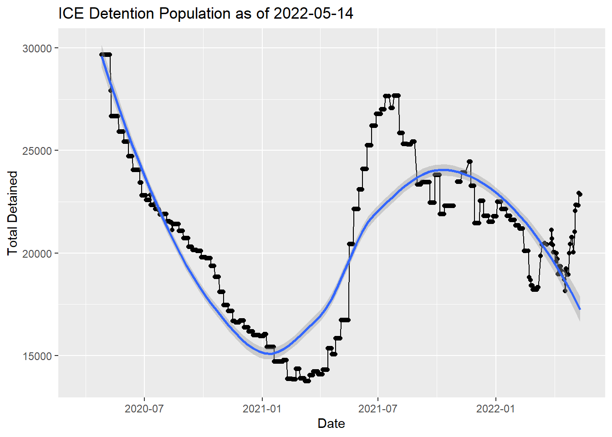
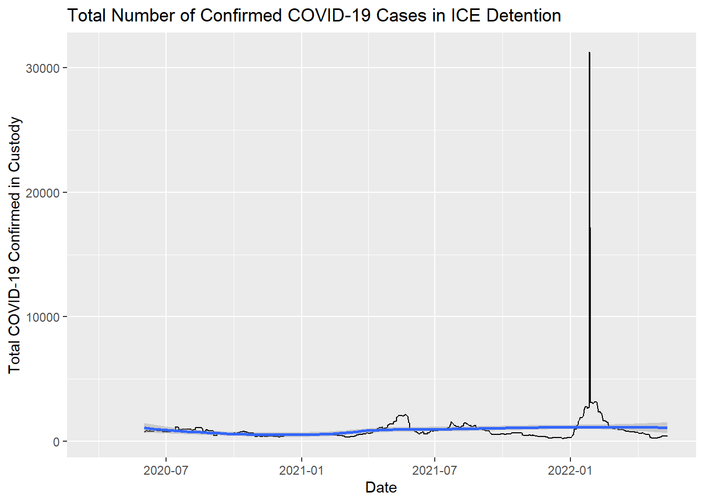

Current ICE Detention Population
Daily updated information on ICE detention population and COVID-19 levels.
Page last updated: Saturday May 14, 2022 at 02:18:52 PM
Introduction
This document provides plots of data reported on the Immigration and Customs Enforcement Guidance on COVID-19 website. On Friday March 13, 2020 ICE suspended family and social visitation. On March 27, 2020 ICE established the Guidance on COVID-19 web page and indicated the site would be updated frequently. Shortly afterwards I began logging the data on a daily basis, occasionally relying on the Internet Archive’s Wayback Machine’s regular scrapes of the page to pick up days that I missed. Results of those scrapes are contained in a github repository and key data including the total detained population (Figure 1), number of active COVID-19 cases in detention (Figure 2), cumulative COVID-19 cases (Figure 3), and total number of COVID-19 tests (Figure 4).
Current Total Detained Population
When President Biden took office, the detained population was 14715. The lowest detention population was 13764 which was reported by ICE between March 9-15, 2021. This was just under three months into the Biden administration. However, by March 16 the detained population began rising again. As of May 14, 2022, the detained population is 22848 which represents an increase of 9084 detained individuals from the lowest point and a 66% change from that value.

Note if a static file is desired, see Appendix A.
Active COVID-19 Cases in ICE Detention
On March 31, 2021 was the lowest number of active COVID-19 cases in ICE detention at 332. By early April 2021, as detention numbers started to rise, the number of active COVID-19 cases in detention shot up quickly. On May 21, 2021 at 2123 active cases was the highest level since the start of the pandemic. While active cases began to fall by May 25, Figure 2 shows that the number of active cases remains more than double its lowest point.

Cumulative COVID-19 Cases in ICE Detention
Figure 3 shows the number of cumulative cases in ICE detention continues to grow at a steady rate. The rate of increase dipped slightly around March but quickly shot up in April and remains growing rapidly.

Total Number of COVID-19 tests in ICE detention
Figure 4 indicates that there is no appreciable increase in the rate of tests after January 20, 2021 when Biden was inaugurated. Based on data reported by ICE, the Biden administration does not appear to have accelerated the rate of COVID-19 testing in ICE detention.

Appendix A: Static plot of total detained population